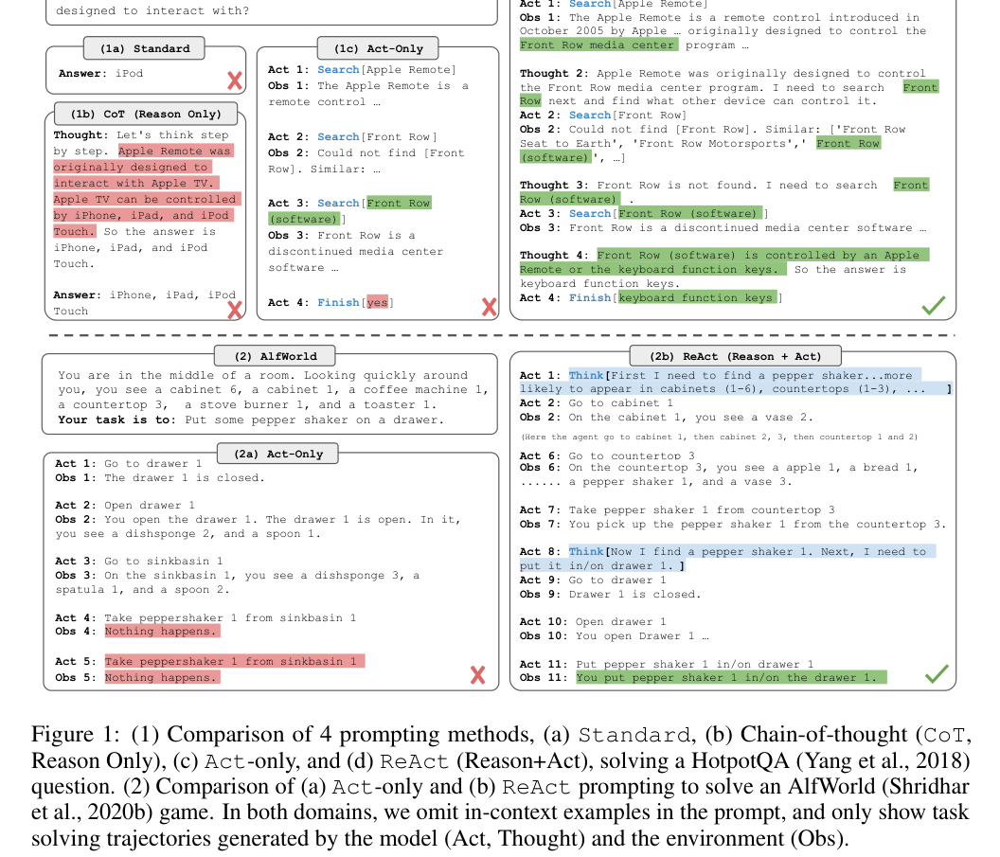
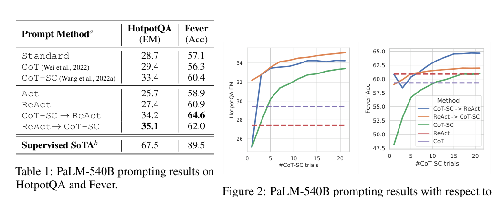
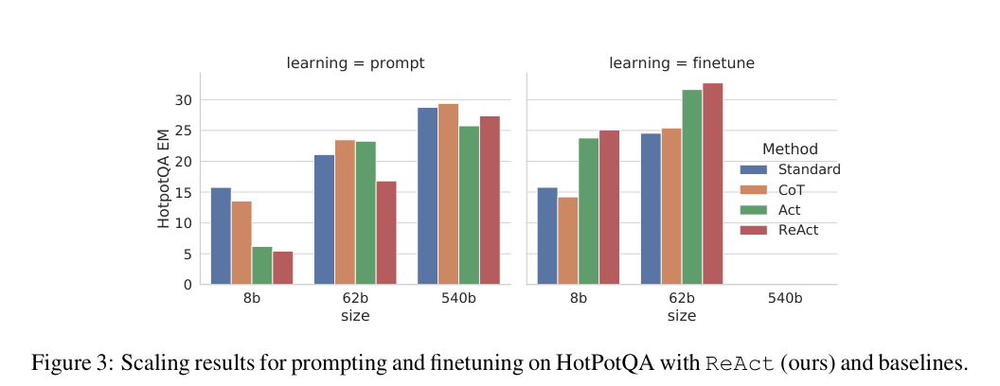
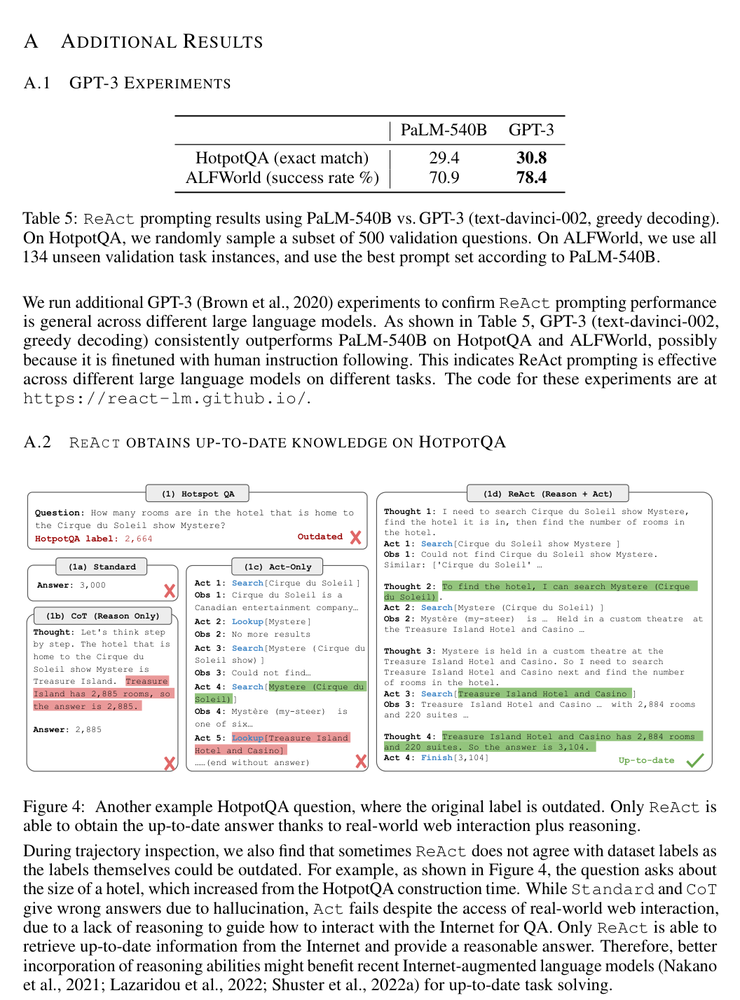
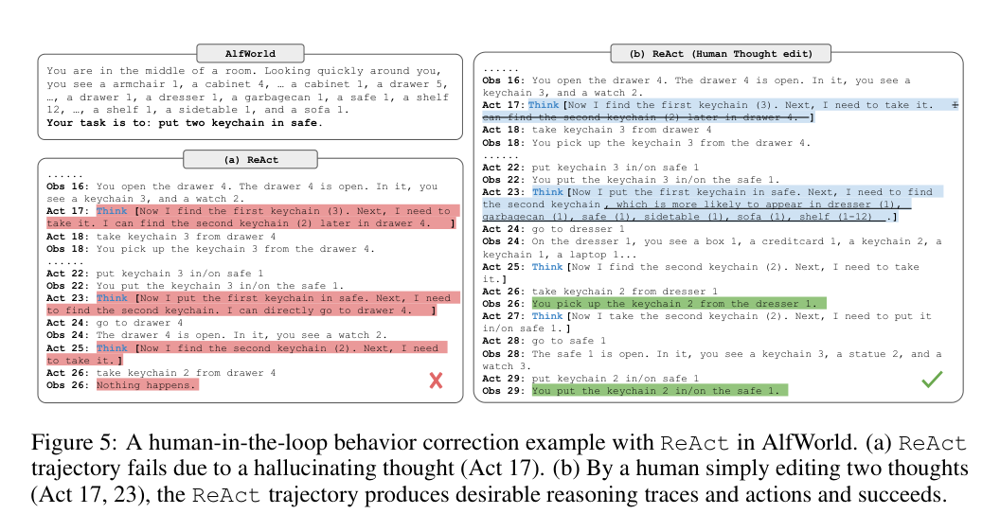

ReAct: 언어 모델에서 추론과 행동의 시너지 창출
대규모 언어 모델(LLM)을 활용하여 언어적 추론(Reasoning, 예: Chain-of-Thought)을 생성하거나 상호작용적 행동(Acting, 예: 웹 브라우징, 도구 호출)을 실행하는 연구가 각각 독립적으로 발전해왔다. 본 논문에서는 LLM을 사용하여 추론 트레이스(Reasoning Traces)와 과제 특화 행동(Task-specific Actions)을 인터리브(interleaved, 교차) 방식으로 생성하는 ReAct (Reasoning + Acting) 패러다임을 제안한다.
추론 트레이스를 생성함으로써 모델은 행동 계획을 수립하고, 진행 상태를 추적하며, 예외 상황에 유연하게 대처할 수 있다. 동시에 행동을 실행함으로써 외부 지식 소스나 환경으로부터 정보를 관찰(Observation)하여 추론의 기반을 현실에 단단히 접지(Grounding)하고, 고질적인 사실 왜곡 및 환각(Hallucination) 문제를 극적으로 줄일 수 있다. 질문 응답(HotpotQA), 사실 검증(FEVER), 텍스트 게임(ALFWorld), 웹 탐색 쇼핑(WebShop) 등 다양한 벤치마크 평가에서 ReAct는 행동만을 수행하거나 추론만을 수행하는 기존 베이스라인을 압도하는 성능과 뛰어난 해석 가능성(interpretability)을 증명하였다.

(1) HotpotQA (질의응답): (a) Standard는 단순 단답형 출력, (b) CoT는 내부 지식에만 의존하여 틀린 전제를 생성(환각 발생), (c) Act-only는 검색은 하지만 관찰 결과를 추론하지 못해 실패, 반면 (d) ReAct는 '생각(Thought)'을 통해 무엇을 검색할지 결정하고 검색 결과(Observation)를 바탕으로 정확한 정답을 찾아낸다.
(2) ALFWorld (가상 체화 환경): (a) Act-only는 찬장과 서랍을 무의미하게 열어보며 헤매지만, (b) ReAct는 상식적 추론을 통해 후추통이 있을 장소를 예측하고 최적의 경로로 이동하여 임무를 완수한다.
1. 서론 (Introduction)
인간의 지능에서 가장 핵심적인 특징은 '목표 지향적 행동(Acting)'과 '내면의 인지적 추론(Reasoning)'이 유기적인 피드백 루프로 결합되어 있다는 점이다. 예를 들어 주방에서 요리를 할 때, 우리는 "소금이 어디에 있지?"라고 자문하며 찬장을 열어볼 계획을 세우고(Reasoning), 찬장 문을 열며(Action), 안에 있는 물건들을 눈으로 확인하고(Observation), "여기엔 설탕만 있군. 싱크대 하부장을 열어보자"라고 생각을 수정한 뒤 다음 행동을 취한다.
그러나 이전의 언어 모델 연구들은 이 두 가지 본질을 서로 분리하여 다루어왔다:
사고의 사슬(Chain-of-Thought)을 전개하지만, 외부 환경과 단절된 모델 내부의 정적 지식(Parametric Memory)에만 의존한다. 최신 정보를 얻을 수 없고, 잘못된 기억이나 가짜 사실을 사실인 양 확신하는 환각(Hallucination) 및 오류 누적(Error Propagation) 현상이 빈번하게 일어난다.
외부 환경에서 웹 검색이나 API 버튼을 누르는 행동을 실행할 수 있지만, 고차원적 목표 분해(Decomposition), 상태 추적, 상식적 계획 수립 능력이 결핍되어 있어 조금만 복잡한 환경에 직면해도 같은 행동을 무한 반복하는 루프에 빠진다.
이러한 양극단의 한계를 극복하기 위해, 본 연구에서는 ReAct (Reasoning + Acting)를 제안한다. ReAct 환경에서 언어 모델은 매 단계마다 '생각(Thought)'과 '행동(Action)'을 상호 교차하여 생성하며, 환경으로부터 반환되는 '관찰(Observation)'을 다시 입력받아 추론과 계획을 동적으로 갱신한다.
2. ReAct 프레임워크 (The ReAct Framework)
2.1 수학적 공식화 (Formulation)
에이전트가 환경과 상호작용하여 과제를 해결하는 일반적인 강화학습 및 순차적 의사결정 설정을 고려하자. 시간 단계 t에서 에이전트는 환경으로부터의 관찰 ot ∈ O를 수신하고, 지금까지의 누적된 맥락(Context)을 바탕으로 행동 at ∈ A를 취한다:
ReAct의 핵심 혁신은 에이전트의 행동 공간(Action Space)을 언어 공간 L로 대폭 확장하여 Â = A ∪ L로 정의한 것이다. 즉, 에이전트가 취할 수 있는 선택지 안에 외부 환경을 조작하는 도구 행동(Action)뿐만 아니라, 내부 인지적 상태를 갱신하는 언어적 '생각(Thought)' at ∈ L을 포함시킨다.
2.2 생각(Thought)이 수행하는 3대 핵심 역할
2.3 4대 프롬프팅 방식의 구조적 비교
본 논문에서는 동일한 과제에 대해 4가지 프롬프팅 아키텍처를 면밀히 비교 분석하였다:
| 패러다임 | 주요 구성 요소 | 외부 지식 접지 | 장점 | 치명적 약점 |
|---|---|---|---|---|
| Standard | 질문 → 바로 답변 | ❌ 불가능 | 토큰 소모 최소화 | 다단계 추론 불가, 찍기성 답변 |
| CoT (Reason Only) | 질문 → 생각의 사슬 → 답변 | ❌ 불가능 | 복잡한 산술/논리 분해 탁월 | 사실 왜곡, 환각 누적(56% 오류율) |
| Act Only | 질문 → 행동 → 관찰 → 행동... | ✔️ 가능 | 최신 외부 정보 조회 가능 | 목표 망각, 무한 루프, 단편적 행동 |
| ReAct (Ours) | 생각 ↔ 행동 ↔ 관찰 교차 | ✔️ 완벽 접지 | 환각 억제 + 유연한 재계획 + 고도의 해석 가능성 | 토큰 소모량 증가, 검색 API 지연 |
3. 지식 집약적 추론 태스크 (Knowledge-Intensive Reasoning)
3.1 HotpotQA 및 FEVER 실험 환경
다단계 징검다리 질문답변 벤치마크인 HotpotQA와 사실 진위 판별 벤치마크인 FEVER를 통해 평가하였다. 에이전트에게는 위키피디아와 통신할 수 있는 3개의 대화형 API 행동이 제공된다:
search[entity]: 위키피디아에서 해당 표제어를 검색하고 첫 문단(5개 문장)을 반환.lookup[string]: 현재 열람 중인 페이지에서 해당 문자열이 포함된 다음 문장을 검색(브라우저의 Ctrl+F 기능 모사).finish[answer]: 추론된 최종 정답을 제출하고 에피소드를 마침.

HotpotQA에서 ReAct 단독 모델(30.8)은 Act 단독(25.7)을 크게 앞서며, 내부 기억 기반 CoT-SC와 결합한 ReAct + CoT-SC(35.1)가 전체 최고 기록을 달성하였다.
3.2 성능 결과 및 오류 패턴 심층 분석
Table 1과 에러 분석 결과에 따르면, CoT의 가장 심각한 문제는 환각(Hallucination)이었다. CoT의 오답 중 무려 56%가 모델이 지어낸 가짜 사실로 인해 발생했다. 반면 ReAct는 외부 위키피디아 관찰에 사실을 엄격하게 고정(Grounding)시킴으로써 환각 오류를 대폭 축소하였다.

프롬프팅 환경과 파인튜닝 환경 모두에서 모델 크기가 커질수록 ReAct가 타 베이스라인 대비 월등히 가파른 성능 향상 곡선을 나타내며, 강력한 스케일링 효율을 증명한다.
3.3 ReAct와 CoT-SC의 상호전환 앙상블 (Hybrid Pipelines)
연구진은 ReAct와 CoT의 상호보완적 특성을 활용한 지능형 결합 파이프라인을 제안하였다:
- ReAct → CoT-SC: ReAct가 정해진 단계 내에 확신 있는 답을 내지 못하면, 수집된 맥락을 넘겨 CoT-SC의 내부 추론으로 최종 판단을 보완.
- CoT-SC → ReAct: CoT-SC의 다수결 투표 결과가 일치하지 않거나 내부 확신도가 낮을 때만 ReAct를 실행하여 외부 팩트를 검증.

기존 데이터셋의 원본 정답 라벨이 과거 데이터여서 오류가 있었음에도 불구하고, ReAct는 최신 위키피디아 문서를 직접 조회하고 교차 검증함으로써 실제 정확한 최신 정답을 역으로 바로잡는 놀라운 능력을 보여주었다.
4. 의사결정 태스크 (Interactive Decision Making Tasks)
4.1 ALFWorld: 텍스트 기반 가상 체화 환경
ALFWorld는 집안 환경에서 6가지 고난도 과제(물건 집어 옮기기, 씻기, 가열하기, 냉각하기, 불빛에 비추어 검사하기 등)를 수행해야 하는 텍스트 시뮬레이터이다. Act-only 에이전트는 어디를 뒤져야 할지 몰라 방 안의 모든 수납장을 무작위로 열고 닫다가 허용된 스텝(50스텝)을 초과해 실패했다. 반면 ReAct는 "머그잔은 식기세척기나 찬장에 있을 가능성이 높다"는 상식적 판단을 Thought에 기록하고 목표 수납장으로 즉시 직행하여 성공률을 비약적으로 높였다.
4.2 WebShop: 실제 웹 쇼핑 브라우징 과제
실제 아마존 웹페이지 118만 개를 기반으로 구축된 WebShop 환경에서, 에이전트는 사용자의 복합 조건(가격 제한, 색상, 부가 기능 등)을 만족하는 상품을 찾고 구매 옵션을 선택해야 한다. ReAct는 사용자의 세부 요구조건을 Thought에서 하나씩 체크리스트 형태로 점검하며 최적의 상품을 구매하였다.
5. 인간 개입 상호작용 (Human-in-the-Loop Interaction)
ReAct의 가장 강력한 장점 중 하나는 의사결정의 투명성과 제어 가능성(Controllability)이다. 블랙박스 신경망과 달리, ReAct는 에이전트의 모든 사고 과정이 자연어로 실시간 노출된다.

에이전트가 방 안에서 열쇠고리를 찾지 못해 헤매고 있을 때, 인간 관리자가 단 한 줄의 생각 교정(Thought Editing: "열쇠고리는 보통 금고 안에 보관되어 있다")을 주입하자, 에이전트가 즉각 행동을 수정하여 금고로 이동해 열쇠고리를 찾아내고 임무를 완수하였다.
6. 관련 연구 및 한계 (Related Work & Limitations)
- 지연 시간과 토큰 비용 증가: 매 턴마다 Thought와 Action을 생성하고 Observation을 다시 컨텍스트에 덧붙여야 하므로, 긴 상호작용 시 컨텍스트 윈도우 한계에 빠르게 도달한다.
- 단일 시도의 한계: 주어진 에피소드 안에서는 뛰어난 적응력을 보이지만, 에피소드가 완전히 실패했을 때 그 경험을 장기 기억으로 보존하여 다음 시도에 반영하는 '메타 반성' 능력은 부족하다 (이 한계는 후속 연구인 Reflexion에서 해결됨).
7. 결론 (Conclusions)
ReAct는 언어 모델에서 추론(Reasoning)과 행동(Acting)을 최초로 유기적으로 통합한 기념비적 프레임워크이다. 추론은 행동에 전략적 방향성을 부여하고, 행동은 추론에 실시간 팩트를 공급하여 환각을 억제한다. 오늘날 널리 사용되는 모든 AI Agent 프레임워크(LangChain, AutoGPT, OpenAI Assistants, Tool Calling 등)의 실질적인 표준 엔진으로 자리잡았다.